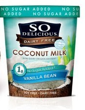
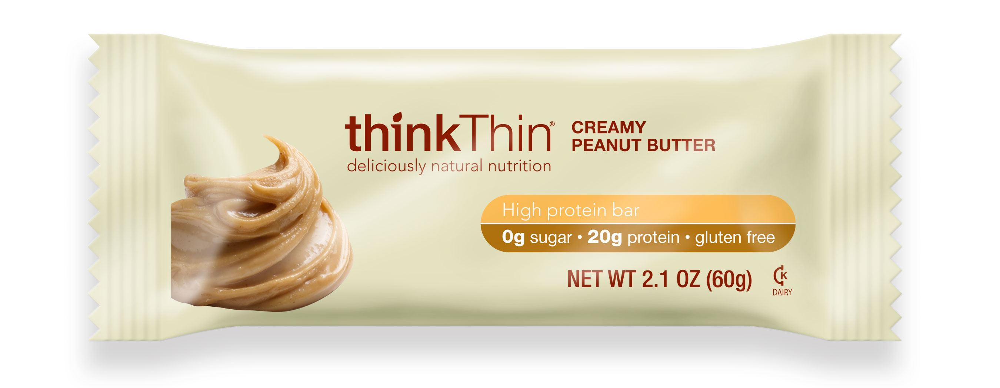
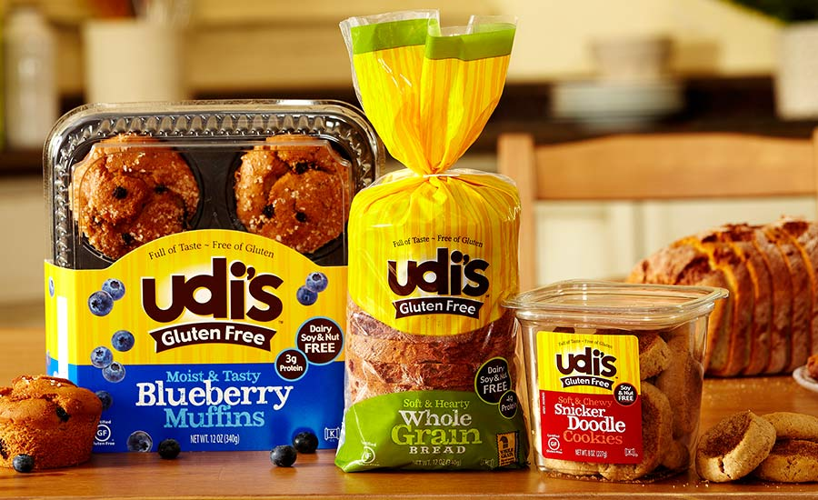
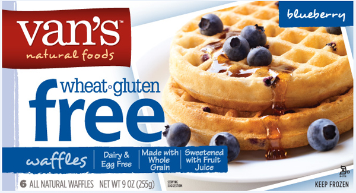
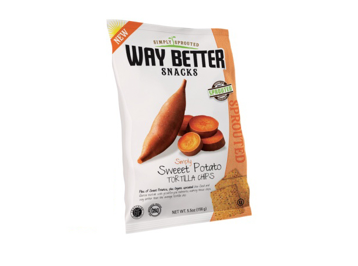
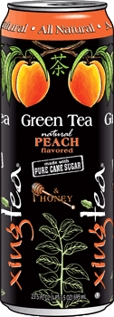
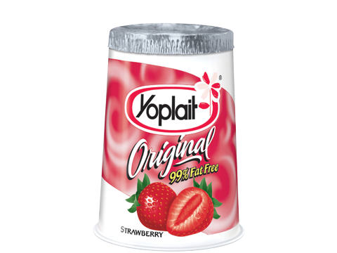
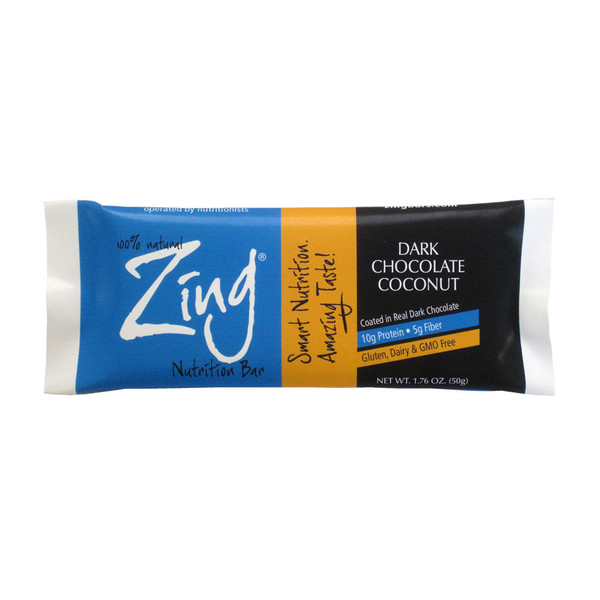

Home About Me Brands A-Z Restaurants What I've Learned Get Connected
| |
Home About Me Brands A-Z Restaurants What I've Learned Get Connected
|
S-ZS: So Delicious- A great dessert go-to. I love the coconut milk desserts. The chocolate and Mint Chip taste like ice cream but are better for you.  T: Thinkthin- LOVE THESE. Great protein bars that are tasty and gf. The creamy peanut butter and white chocolate variety are my favorite.  U: Udis- BEST OVERALL WINNER. They are my absolute, highest rated gf brand EVER. The bread is AMAZING and in my opinion is better than normal wheat bread. There are lots of different varieties from sandwich bread to hamburger and hotdog rolls. Their muffins are also great if you don’t want to make them yourself. The blueberry and chocolate chip are my favorite. Their cookies are also to die for. Can’t rave enough about Udi’s. Most stores have it and all the colleges that I looked at had it in their gf sections.  V: Vans- This is a really good frozen food brand. Their frozen waffles and french toast sticks are amazing and great for sleepy mornings. On a side note, their Cinnamon Heaven Cereal is also worth trying.  W: Way Better- This is another all natural snack brand with really good chips. The black bean and sweet potato chips are really good.  X:Xing Tea- This is a tea brand that is similar to Arizona. I’ve only had it a few times but the peach and honey flavor is delicious.  Y: Yoplait- Another well-known brand. Their yogurt is great and comes in all sizes and flavors. I love new greek yogurt, especially the strawberry flavor. Put it under some cereal to add some excitment to breakfast.  Z: Zing- These are nutrition bars that have some really unique flavors. The chocolate coconut and almond blueberry are my favorite.  |